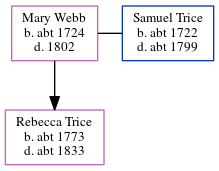

Mary Trice (née Webb) c1724 - 1802
[ Home ] | [ Calendar ] | [ Surnames Index ] | [ Errors ] | [ Family History ]Mary Webb, the 5 times great-grandmother of Nigel Horne, was born in Kent, England c. 17241 and married Samuel Trice (with whom she had 1 child, Rebecca) at St Mary The Virgin, Minster, Thanet, Kent on 9 Oct 17452.
She died in 1802 in Wickhambreaux, Kent, England and was buried there at St Andrews on 17 Oct 1802 (KFHS CD22)3.
Children
- Rebecca was born c. 1773
Citations
- Kent Burials - Findmypast
- Familysearch.org (www.familysearch.org)
- Kent Burials - Findmypast
Media
England Marriages 1538-1973 - R_848032807/2
Kent, Canterbury Archdeaconry burials - GBPRS/CANT/D/95317055
Kent marriages and banns - GBPRS/EASTKENT/MAR/202340/2
Britain, marriage licences - GBPRS/COA/MARRLICENCE/00156239/2
Family Tree
Map
Generated by ged2site. Last updated on Jul 3, 2024
Known Issues
Death date (1802) has no citations